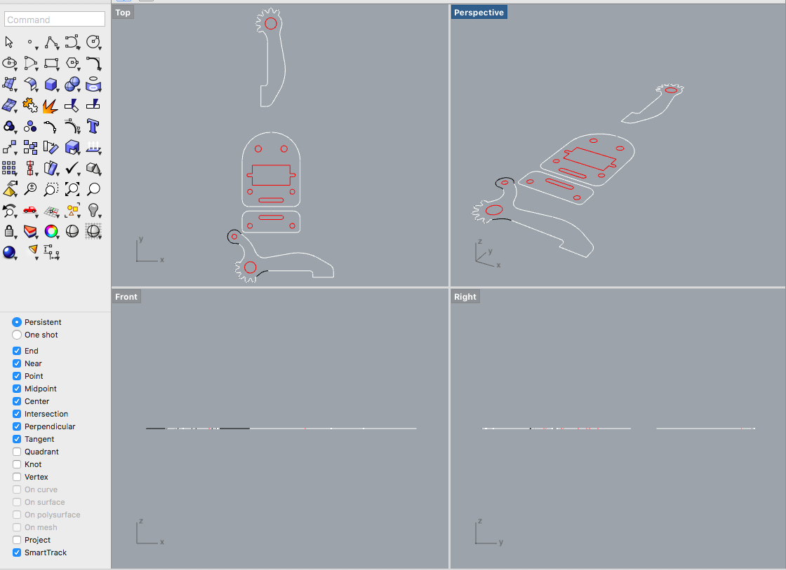

Mechanical Design or Machine Design is one of the important branches of Engineering Design. To understand what exactly machine design or mechanical design is let us consider the example of the gear box of the car. The gear box transmits the motion and the power of the engine to the wheels of the vehicle. The gearbox comprises group of gears which are subjected to not only motion but also the load of the vehicle. For the gears to run at desired speeds and take desired loads it is important that they should be designed. During designing various calculations are performed considering desired speeds and loads and finally the gear of particular material and specific dimensions that can take all loads and that can be manufactured at least possible cost giving optimum performance is designed. In similar fashion all the components of the car, including engine, have to be designed so that they optimally meet all the functional requirements at lowest possible cost. This whole process of designing is called as machine design or mechanical design.
Machine Design or Mechanical Design can be defined as the process by which resources or energy is converted into useful mechanical forms, or the mechanisms so as to obtain useful output from the machines in the desired form as per the needs of the human beings. Machine design can lead to the formation of the entirely new machine or it can lead to up-gradation or improvement of the existing machine. For instance if the existing gearbox is too heavy or cannot sustain the actual loads, entirely new gearbox can be designed. But if the same gearbox has the potential to lift more loads, it can be upgraded by making certain important changes in its design.
Machine design is an important part of engineering applications, but what is a machine? Machine is the devise that comprises of the stationary parts and moving parts combined together to generate, transform or utilize the mechanical energy. All the machines are made up of elements or parts and units. Each element is a separate part of the machine and it may have to be designed separately and in assembly. Each element in turn can be a complete part or made up of several small pieces which are joined together by riveting, welding etc. Several machine parts are assembled together to form what we call as complete machine.
Here are some examples of the machines:
1) Lathe: It utilizes mechanical energy to cut the metals. The other types of machine tools also perform the same task.
2) Turbines: They produce mechanical energy.
3) Compressors: They use mechanical energy to compress the air.
4) Engines: They consume the fuel and produce mechanical energy.
5) Refrigerators and air-conditioners: They use mechanical engineering to produce cooling effect.
6) Washing machines: They use mechanical energy to wash the clothes.
Read More
This is a two week assignment to make a machine as group assignment. We have formed a single group of 9 students to make good projects.we started our planning from week8 and identified some projects for this week. As a team member I also done some research in this and found some interesting projects. Link to Group Project Page Finally our team decided to make a U-ARM which is an existing project. Let's Introduce Our team and other details and their this weeks Contribution.
These are my project proposals for this week. After a long discussions with our instructors , we are finalised to replicate the U-arm with added functional elements.
FAB-Arm or FABLAB Robotic Arm , this is the name we have given to our robotic arm made first in Fab Lab Kerala.It is a miniature 4-axis parallel-mechanism robot arm called U-Arm, modeled after the ABB PalletPack IRB460 industrial robot arm. It is made up of laser cut acrylic or wood parts, powered by standard RC hobby servos, and controlled by an Arduino-compatible board. The basic design is Arduino-controlled, using 4 servos, with 4 degrees of freedom. Three servos on the base control the main movement of the arm and the last servo on the top moves and rotates the object. We planned to make a common arm with multiple end effector. Later, suggestions came from team menbers to add a linear rail to it additionally, so that it will move through the rails which add one more degree of freedom and which help us to move objects or to do pick and place for a long distance. To know more about the project U arm
This is a concept design by team
After Neils lecture on Wednesday 22nd March 2017, Thursday our team meeting was called and in the meeting finalised the project and we divided the individual responsibilities of each persons and shedules to finish the tasks. The task assigned to me is shown below.
The work assigned to me by Team
Cutting and Assembling the parts We got the design parts from this link. We laser cut the parts.

Testing out robotic arm
We used arduino to test and control the servo motors.
Drawing a line repeatedly
The Detailed documentation and codes for the arduino are written here
Now here we comes to the Hero Shot of the Something this Week
The end effector made by me and Ganadev prajapathy
© 2017, made with by scitechindian
This work done by SYED JUNAID AHMED is licensed under a Creative Commons Attribution-NonCommercial-ShareAlike 4.0 International License.